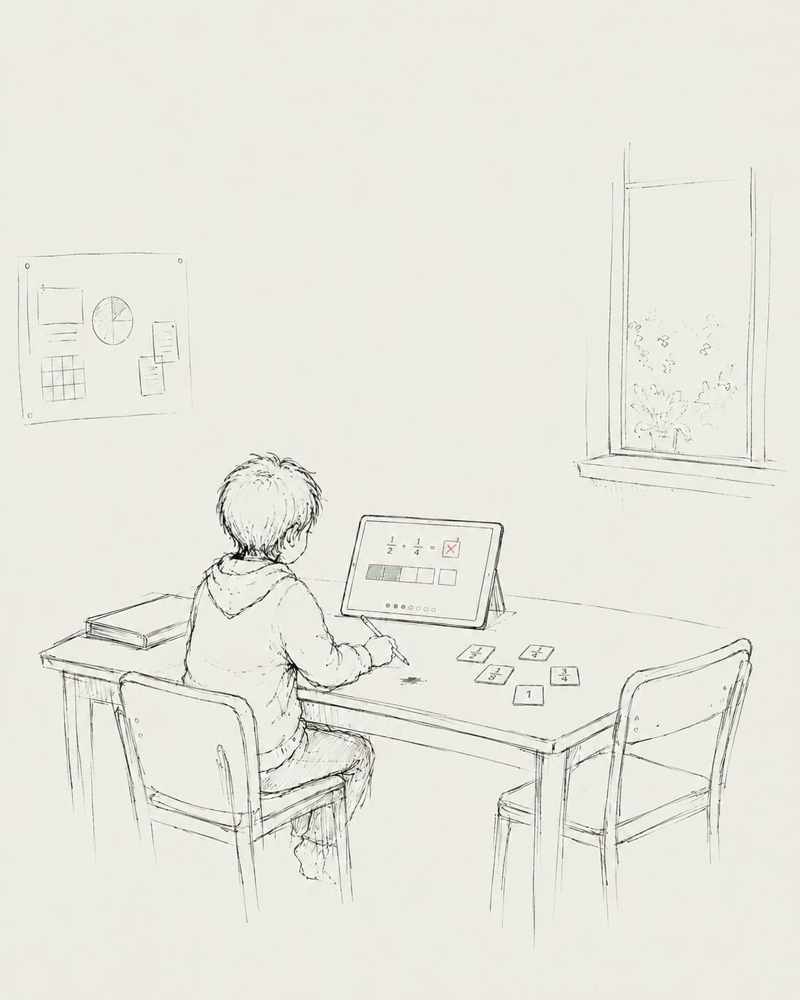
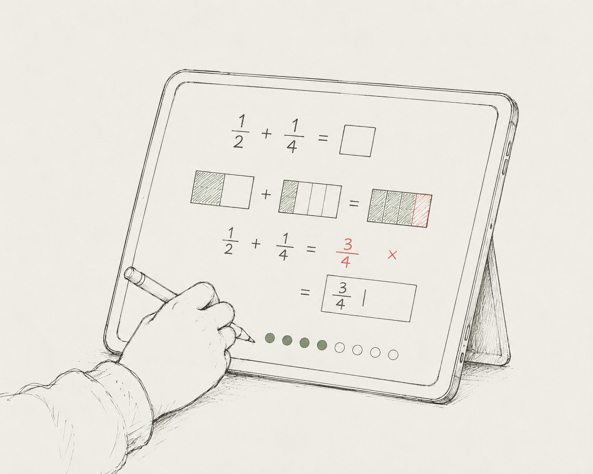
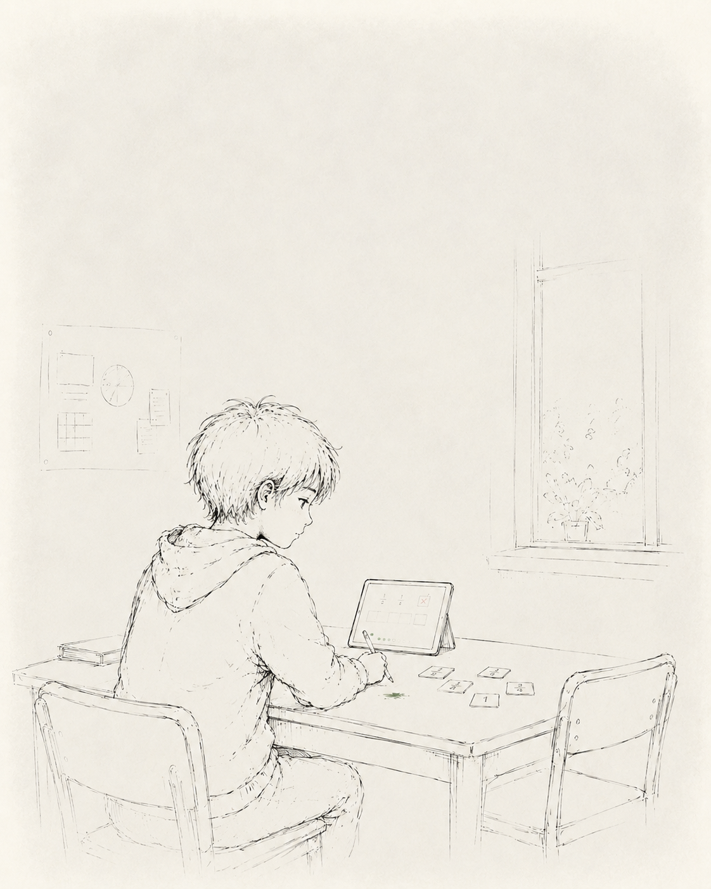
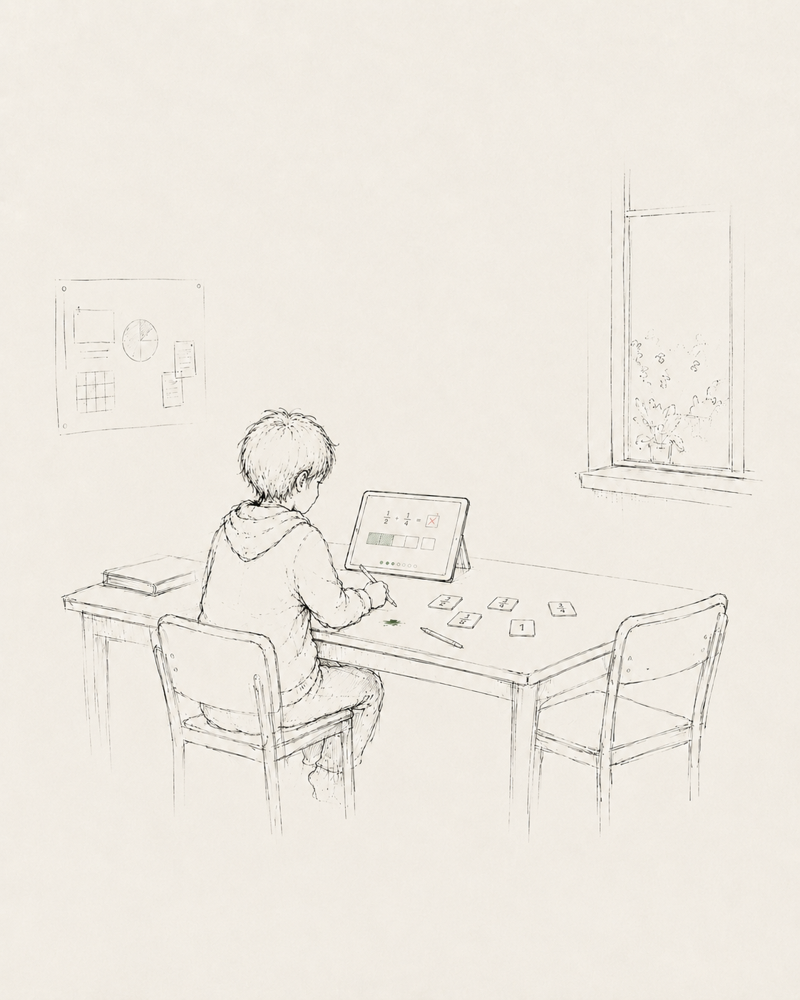
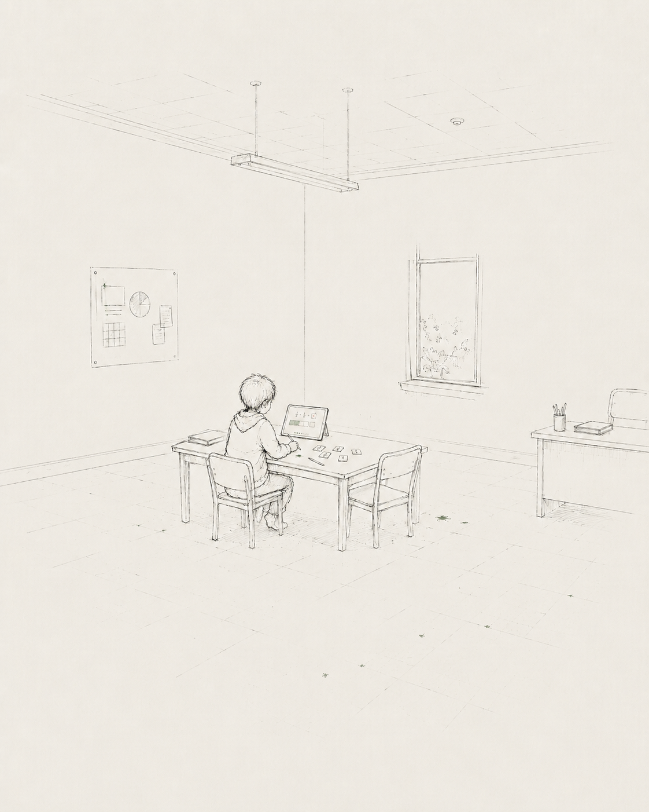
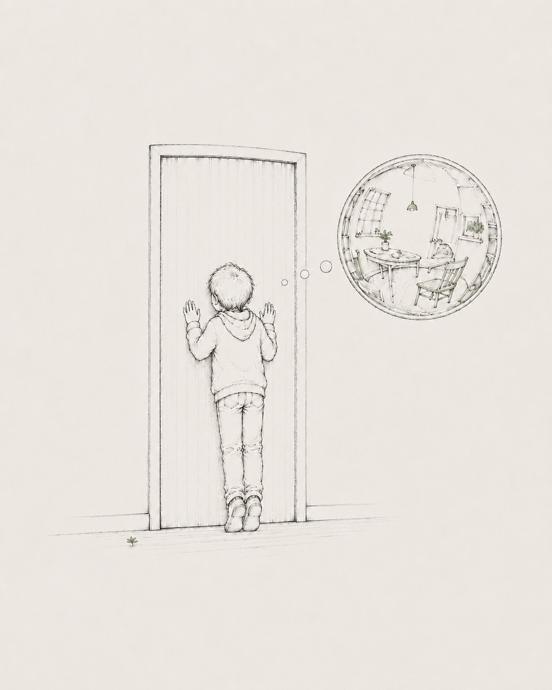

On building fish eyes for learning
Everyone has their own view of education
What comes to your mind when you think about the word "education"?

Meet Irfan, he's ten
He likes being outside, looking after things, the plants on the windowsill, the class guinea pig, and his little brother.

Lately he's been working through fractions, and he gets the first few steps right almost every time, then reaches the same spot near the end and gets stuck.

There are at least four ways to look at this one moment




In this moment, how would you help him?
None of the four is wrong, they just attend to different questions in the same moment.
As a behaviorist, what help would you give Irfan?
If you were a cognitivist, what would you offer Irfan?
From a situated and distributed cognition perspective, what would you put in front of Irfan?
What would a sociocultural lens ask of Irfan's classroom?
Each of these perspectives is true. None is the wrong way to look. An issue arises, however, when a perspective is held alone: it becomes a crop of education, and the other perspectives fall out of frame.
Amelia Wattenberger, writing about how we read, reaches for a camera bag.
"A fish eye lens doesn't ask us to choose between focus and context."
We are inspired by Amelia's point here: holding both the fine detail of a view and the big picture at once. The other views stay visible at the edges.
Amelia Wattenberger, "Fish eyes," wattenberger.com/thoughts/fish-eye (2024).
The honest part is that these four views do not always agree. One cannot stop choosing, but they can notice and situate to see where any one view sits inside the bigger picture.

Try the fish-eye lens yourself

Move the lens over the scene.
With the normal lens, you see one view in detail. Switch to the fish-eye and other questions curve around the rim.
Holding them together isn't blending them into a single blur. These perspectives genuinely disagree about what learning even is. Whichever you choose to focus on, you choose it. Holding them together means keeping the disagreement in frame, the way a good map keeps streets and highways on one screen without pretending either is a summary of the other.
Where is the field spending its attention?
Place each product where you think it's situated in the field.
Where the attention landed
Place a few products to see the lean.
Two axes: individual ↔ collective (who's learning) and observable ↔ interpretive (what counts as learning). The four camps fall into the corners. The red dot is the centre of gravity of everything you placed. In other words, your perspective on the field's current tilt.
What comes to mind now when you think about the word "education"?

And so the small seed of curiosity grew into something magnificent, when no single lens was looking.
The focus was never what troubled us. It was a focus that mistook itself for a whole that was shared.Vishal & Yoyo
With thanks to Amelia Wattenberger, whose "Fish eyes" gave us the lens.